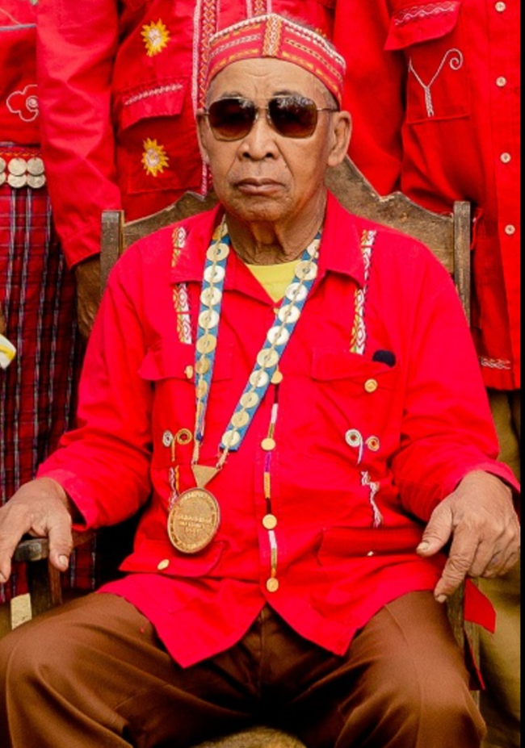
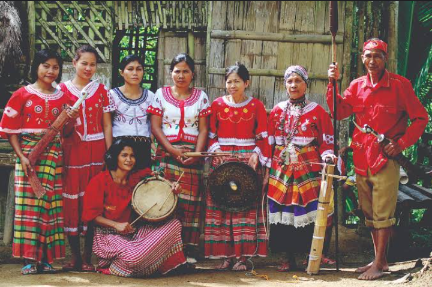
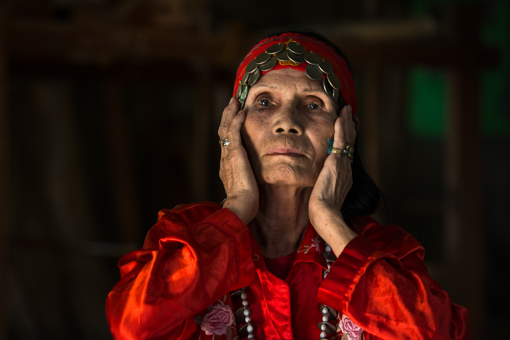

Federico Caballero also known as ‘Tuohan’was awarded as Philippines GAMABA (Gawad Manlilikha ng Bayan)awardee way back in 2000 for his excellence in epic chanting.He is the Founder of Panay Bukidnon tribe in Calinog.
The Panay Bukidnon or Tumandok, are a culturally indigenous Visayan group of people who reside in the Capiz-Lambunao mountainous area and the Antique-Iloilo mountain area of Panay in the Visayan islands of the Philippines. They are one of the two only culturally indigenous group of Visayan language-speakers in the Western Visayas, along with the, Halawodnon of Lambunao and Calinog, Iloilo and Iraynon-Bukidnon of Antique.
Rosetta Caballero, 66 years old, is the last Binukot in the tribe. She was well-kept in a bamboo shack since she was two years old. She was not allowed to mingle with other children. She was not allowed to do household chores. She was even helped when eating. She was not allowed to touch the ground when attending engagements. She was not able to attend school. She was the jewel of the tribe.
